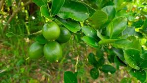

Info Tanaman Banyumanik

Jeruk Nipis
Kingdom: Plantae
Divisi: Tracheophyta
Class: Magnoliopsida
Ordo: Sapindales
Famili: Rutaceae
Genus: Citrus
Spesies: Citrus aurantiifolia
🌱 Budidaya
- Lingkungan: Tumbuh baik di dataran rendah hingga 800 mdpl, membutuhkan tanah gembur dan subur dengan pH 5,5–6,5. Paparan sinar matahari penuh sangat penting.
- Penanaman: Jarak tanam ideal adalah 4 x 4 meter. Waktu tanam terbaik adalah awal musim hujan agar akar cepat berkembang.
- Perawatan: Siram secara teratur, berikan pupuk organik dan NPK. Pangkas cabang yang kering atau terlalu rimbun, serta waspadai hama kutu daun dan penyakit jamur.
💡 Fun Fact
"Pembersih Alami yang Ampuh!" — Air jeruk nipis mampu membersihkan lemak, kerak, bahkan bau amis secara alami!
🍃 Manfaat
- Kaya vitamin C yang memperkuat sistem imun dan mempercepat penyembuhan luka.
- Air perasannya membantu melancarkan pencernaan dan proses detoksifikasi tubuh.
- Memiliki sifat antibakteri, menjadikannya bahan alami untuk produk pembersih rumah tangga.